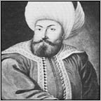
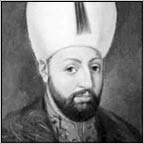

OSMANLI’DA KARDEŞ KATLİ VE GÜN YÜZÜ GÖRMEYEN ŞEHZADELER
Osmanlı Hanedanlığı’nda kardeş katli, Fatih Sultan Mehmed zamanında kanunlaştırılmıştır. Ancak, Fatih tarafından başlatılmamıştır. Fatih Sultan Mehmed, kendisinden önceki dönemlerde yaşananların bir daha yaşanmaması adına, bu yolu bir çare olarak uygulamıştır. Fatih, bu konudaki kanunnamesinde şöyle der:
“Evladımdan her kimesne (kime) saltanat müyesser (nasip) ola, karındaşların nizam-ı âlem (dünyanın düzeni) için katletmek münasiptir (uygundur). Ekser-i ulema (âlimlerin geneli) dahi tecviz vermiştir (caiz görmüş, onaylamıştır). Anınla amil olalar (böyle uygulasınlar).”
Osmanlı Devleti, kuruluşundan itibaren merkeziyetçi bir anlayışa sahipti. Hanedan içinde dahi olsa hiçbir ayrılıkçı güç odağını kabul etmezdi. Ayrıca bir veraset kanunu olmadığı için kimin hükümdar olacağı da belli değildir. Eski Türk devlet anlayışına göre devlet, kardeşler arasında bölünürdü. Osmanlılar da ilk önce bu anlayışa yönelmişti.
Osman Bey öldüğünde oğlu Orhan Bey, kardeşi Alaeddin Bey’e, ülkenin ortak bir biçimde yönetilmesini teklif etmiş fakat Alaeddin Bey, Osmanlılarda saltanat anlayışının temelini atacak olan şu sözleri sarf ederek, yönetimi kardeşi Orhan’a teslim etmiştir:
“Bir sürüye bir çoban, bir devlete bir baş gerek.”
Bu anlayış, artık Hanedan’da ikinci bir güce yer bırakmıyordu…
Osman Bey, kendisine siyasi rakip olarak gördüğü (o sıralarda doksan yaşlarında olan) amcası Dündar Bey’i bizzat kendi eliyle ve okla öldürmüşse de aslında Osmanlı Hanedanı’ndaki ilk “kardeş katli”ni I. Murad, saltanat davasına girişen kardeşleri İbrahim ve Halil Beyleri öldürterek gerçekleştirdi.

Osman Bey
Hanedanlık tarihi boyunca, bu uygulamalar nedeniyle tahtın vârisleri azalmış ve Osmanlı soyunun tükenmesi tehlikesi ortaya çıkmıştır. Bu yüzden, olası vârislerin, “kafes”te, ev hapsinde tutulması sistemi daha güvenceli görülmüştür. Padişah I. Ahmed, hanedan veraset sistemini değiştirip, kardeş katli yasasını kaldırmış, bunun yerine ekberiyet (genel manada veliahtta, yaşça büyük olanın hak sahibi olması için kullanılan Osmanlıca terim) ve erşediyet (şehzadenin akıl sağlığı ve olgunluk niteliklerini taşımasını şart koşan yöntemin adıdır) esasları uyarınca taht’a geçilmesini ve kafes sistemini getirmiştir. Ancak bu kez de taht’a geçen yeni hükümdarların halktan kopuk ve devlet yönetiminden habersiz olması sorunları baş göstermiştir.
“Sığar bir kilim içine on gedâ (yoksul, fakir)
Bir iklime sığamaz iki padişâ”
Kemal Paşazade’ye ait olan bu dizelerdeki gibi, bir iklime sığamayan padişahlar arasında, katledilen ve “kafes” hapsinde tutulan gün yüzü görmemiş bahtsız şehzadeleri ve onlara bu yöntemleri uygulayan padişahlarla birlikte, eline hanedan kanı değmemiş olanları da tarihî sırayla kısa kısa analım istedik.
I. Murad (Hüdavendigâr)
Osman Gazi, 1324’te vefat ettiğinde üç oğlu hayattaydı. Oğulları arasında saltanat mücadelesi olmadan Orhan Gazi taht’a çıktı. Orhan Gazi’den sonra oğlu I. Murad, 1362’de taht’a çıktığında Halil ve İbrahim isimli iki kardeşi vardı. I. Murad, Eskişehir bölgesinde yöneticilik yapan kardeşlerini ortadan kaldırdı. Şehzadelerin isyan ettiklerine dair rivayetler vardır. İki şehzadenin öldürülmesi ile birlikte hanedanda ilk kardeş kanı akmıştı.
Yıldırım Bayezid
I. Murad’ın ilk eşi Marya (Gülçiçek) Hatun’dan doğan büyük oğlu Yıldırım Bayezid, Hanedan cinayetlerine bir yenisini eklemiştir. Babasının 1. Kosova Savaşı’nda ölmesi üzerine kendisi onun yerine geçer geçmez (daha savaş sürmekte iken), kardeşi Şehzade Yakup’u “Baban çağırıyor.” diye çağırtarak boğdurmuş, babasıyla ikisinin cesetlerini Bursa’ya göndererek defnettirmiştir (1389).
Çelebi Mehmed
Ankara Savaşı sırasında Yıldırım Bayezid’in altı oğlu hayattadır. Süleyman, Mustafa, Musa, İsa, Mehmed ve Kasım. Bunlar Olga, Olivera ve Devlet Hatun isimli üç eşten olmadır.
Yenilginin ardından oğullar arasındaki bölünme ve on bir yıl kadar süren kavgalardan sonra 1413 yılında Çelebi Mehmed’in iktidara hâkim olmasıyla Osmanlı’nın yeniden kurulduğu söylenebilir.
Düzmece Mustafa (Mustafa Çelebi)
Kardeşlerden Mustafa, savaşta kayboldu. Süleyman, Musa, İsa, Mehmed Çelebi, aralarında sürekli mücadele ettiler. Önce Mehmed Çelebi, İsa’yı Eskişehir’de yakalayıp boğdurttu. Sonra Musa Çelebi, ağabeyi Süleyman Çelebi’yi boğdurttu. Daha sonra Musa Çelebi, Mehmed Çelebi’den kaçarken bir su arkına düşüp boğuldu. Ölen üç kardeş de Bursa’da babalarının yanına gömüldüler. Savaş sırasında çok küçük olduğu için Bursa’da kalan en küçük kardeş Kasım da Bizans İmparatoru’na rehin verildiğinden, İstanbul’da kalıp Bizanslı olmuştur. Böylece Mehmed Çelebi, 1413 yılında, tek hak sahibi olarak iktidara geçer. Kaybolan Mustafa Çelebi de 1418’de ortaya çıkmış, Yıldırım’ın özbeöz oğlu olduğu hâlde adı Düzmece Mustafa olarak kalmıştır. Bu yeniden kuruluş yıllarının iktidarı olduğundan ona da “Padişah” değil “Çelebi” denmiştir.
Musa Çelebi
I. Mehmed 1421’de otuz üç yaşında iken bir av kazası sonucu öldü. Bir kısım tarihçiye göre, cesedinin iç organları sökülüp, cesedin bulunduğu odaya gömüldükten sonra içi boş ceset, yatakta sanki canlıymış pozu verilerek yatırılıp, kırk gün Edirne Sarayı’nda saklandı. Bütün bu operasyonun maksadı, Mustafa Çelebi’nin çıkıp gelerek tahtta hak iddia etmesinin önüne geçmekti. Mehmed Çelebi öldüğünde, arkasında üç tane oğul bırakmıştı; 18 yaşındaki Murad, 13 yaşındaki Mustafa, 9 yaşındaki Mahmud. Kırk günün sonunda büyük oğul Murad, Sancak Beyi olduğu Amasya’dan Bursa’ya geldi ve babasının ölümüyle birlikte kendisinin de padişahlığı ilan edildi.
On sekiz yaşındaki II. Murad’ın padişahlığını ilan etmesiyle birlikte amcası Mustafa Çelebi de Edirne’de hükümdarlığını ilan etti. Taht’a çıkışının birinci yılında amcasıyla savaşa tutuşan II. Murad, sonunda Çelebi Mustafa’yı Edirne’deki hisar burcuna astırdı (1422). Bir yıl sonra da on üç yaşındaki öz kardeşi şehzade Mustafa’yı İznik’te yakalatıp, bir incir ağacının dibinde boğdurduktan sonra, Bursa’da babası I. Mehmed’in yanına gömdürdü (1423). Daha da küçük yaştaki öbür iki kardeşleri Mahmud ile Yusuf’un da sadece kızgın demirle gözlerini çıkartıp kör ettirmekle yetinmiştir.
II. Murad
Murad, tıpkı babası Mehmed Çelebi gibi, inme sebebiyle öldü. O sırada kırk dokuz yaşındaydı. Toplam otuz yıl kalmıştı iktidarda. Oğlu II. Mehmed, Manisa’dan Edirne’ye gelinceye kadar, ölümü on altı gün gizlendi. (1451)
Sultan II. Mehmed, taht’a geçtiğinde, kardeş katlini yasallaştırmıştır. Kendisi de emzikteki kardeşi Ahmed’i öldürterek, bu yasanın, yasal olan ilk uygulamasını gerçekleştirmiştir.

Fatih Sultan Mehmed
Otuz yıl iktidarda kaldıktan sonra, kırk dokuz yaşında dünyadan ayrılan Fatih’in, zehirlenerek öldürüldüğü iddiaları da boşuna çıkmamıştır ortaya… Bizans’ı yıkmak yerine, onun başına geçme aranışı, besbelli ki pek hazmedilememiştir çevresinde.
Sultan Mehmed’in çağdaşı olan Âşık Paşazade, Fatih’in ölümünü imalı bir dille şöyle anlatıyor:
“Vefatına sebep ayağunda zahmet vardı. Tabibler macundan aciz oldular. Ahir tabibler cem oldu, ittifak ittüler. Ayağından kan aldular. Zahmet ziyade oldu. Şarab-ı fariğ verdüler. Allah rahmetine vardı.”
Hekimler nasıl bir ilaç vermişlerse, Fatih o ilacı içer içmez ölmüş. Hem de yine Âşık Paşazade’nin deyimiyle “ciğeri doğranarak” yani acılar içinde kıvranarak. (1481)
Fatih’in ölümünden sonra oğlu II. Bayezid ile kendisinden on bir yaş küçük olan kardeşi Cem arasındaki iktidar kavgası, tam bir anarşi ortamı içinde başlamıştı. II. Bayezid otuz dört, Cem Sultan da yirmi üç yaşındaydı. Fatih ölünce, Karamani Mehmed Paşa, Amasya Valisi olan Bayezid’e haber göndermiş ama el altından Konya Valisi olan Cem’e de ağabeyinden daha önce gelmesi için haber göndermişti.
Bayezid’i tutan yeniçeriler, Cem’e uçurulan haberi öğrendiler ve hem Karamani’yi parçaladılar hem de birçok konağı yağmaladılar. Sonunda II. Bayezid hükümdar oldu ama Cem’le kavga bitmedi. Cem, Rodos şövalyelerine sığındı.
Şövalyeler bir yandan II. Bayezid’le pazarlığa giriştiler, bir yandan da Osmanlı Sultanı’nın Rodos’u kuşatmasından korktuklarından, Cem’i Fransa’ya götürdüler. II. Bayezid, şövalyelere yılda kırk beş bin altın vermeyi kabul ederken, Fransa Kralı’yla da ödeyeceği haracın hesabını yapmaya başladı. O sırada Mısır’daki annesiyle karısı da kendisini kurtarmak için yine Rodos şövalyelerine boyuna para veriyorlar, şövalyeler, Cem’i bazen tekrar Rodos’a getiriyor, bazen tekrar Fransa’ya götürüyorlardı.
Cem’in oradan oraya tutsak olarak dolaştırılması yedi yıl sürdü. Sonunda Fransa Kralı ve şövalyeler, Papa ile anlaştılar. Cem, Papa’ya teslim edildi. Bayezid’in yılda ödediği kırk bin altından artık Papa da pay alıyordu. Kardeşinden kesinkes kurtulmak azminde olan Bayezid, Cem’in öldürülmesi karşılığı üç yüz bin altın ödeyeceğini bildirdi. Bunu öğrenen Fransa Kralı VIII. Charles, İtalya seferi sırasında Cem’i, o tarihteki Papa’dan aldı. Ve tam o günlerde Cem, yüzü gözü şişerek öldü (22 Şubat 1495). Söylentilere göre Papa Alexandre Borgia, Cem’i zehirledikten sonra teslim etmişti. Cem, öldüğünde otuz dört yaşındaydı. Bayezid, kardeşi Cem’in öldürülmesi için Papa’ya üç yüz bin altın ödemişti.
Cem Sultan
Cem’in oğlunun adı Oğuz Han’dı. II. Bayezid taht’a çıktıktan sonra, Edirne’de bir ziyafet vermiş ve ziyafete, Fatih’in eski veziriazamlarından Gedik Ahmed Paşa’yı da davet etmişti. Gedik Ahmed Paşa, Cem yanlısıydı ve Cem’in oğlu Oğuz Han’ı bir süre koruyup kollamıştı.
II. Bayezid, ziyafet sırasında Gedik Ahmed Paşa’ya, “ölüm” işareti olan kara kaftan armağan etti ve yemeğin sonunda da kendisini cellatlara boğdurttu. Sonra da İstanbul muhafızı İskender Paşa’ya şu fermanı gönderdi:
“Kulum İskender! Bu emir sana vasıl olduğu gibi bilesin ki Gedik’i tepeledim; gereklidir ki sen de Cem’in oğluna mecal vermeyip boğdurasın ki gayet mühimdir.”
İskender Paşa, boğdurttu Cem’in oğlu Oğuz Han’ı (1483). Yani Cem’in ölümünden on iki yıl önce…
Cem’in diğer oğlu Murad, Mısır’da ailesinden ayrılarak Rodos’a gelmiş ve orada kalarak Katolik olmuştur. Rodos, Kanuni Sultan Süleyman zamanında zapt edilince, ele geçen Murad ile oğulları öldürülüp, iki kızıyla zevcesi İstanbul’a yollanmıştır. Cem’in üçüncü oğlu Ali hakkında bir bilgimiz yoktur. Yalnız, onun bir kızı olduğunu biliyoruz.
Fatih’in yerine yirmi dokuz yaşında hükümdar olan II. Bayezid, otuz yıllık iktidarı sonunda bir hayli yorulmuş ve ruhsal çöküntülere düşmüştü. Sekiz oğlu olmuş, kendisi altmış yaşına geldiğinde, bunların sadece üçü hayatta kalmıştı: Ahmed, Korkud ve Selim… Kendisi, sağlığında iktidarı bırakmayacağına dair küçük oğlu Selim’e söz vermiş olduğu hâlde bir gün o sözü yok sayıp; “Muaccelen Ahmed Han’ı getürün ve mülkü sahibine vîrem, tahtı vârisine teslim kılam.” diye bir ferman buyurmuştur.
Yavuz Sultan Selim
Selim, babasının fermanını haber aldı ve kendisine verilmiş olan sözün çiğnendiğini görerek, kırk bin kişilik bir kuvvetle, Çorlu’da babasının kuvvetlerinin bulunduğu Karıştıran Ovası’na geldi. Sözde, babasını ziyaret ederek elini öpmeye gelmişti.
Şehzade Ahmed’in padişah olmasını isteyenler, II. Bayezid’i Selim’e karşı kışkırtmak için, Padişah’ın içinde bulunduğu saltanat arabasının perdelerini açtılar ve “Elinizi öpmeye gelen oğlunuzun kuvvetini görün; tertipli ve silahlı askerlerle oğul, babayı böyle mi ziyaret eder?” dediler. Sonuçta, II. Bayezid’le oğlu Selim arasında savaş başladı. Selim’in kuvvetleri bozuldu. Selim de kaçtı.
Artık Ahmed’in hükümdarlığı kesinleşmiş gibiydi. Padişah olmak için kalktı, İstanbul yakınlarına geldi. Ne var ki Ahmed’in İstanbul’a girmek için babasından izin istediği akşam, üç bin yeniçeri, “Ahmed’i istemezük!” diye ayaklandı.
Veziriazam Hersekzade Ahmed Paşa’nın, ikinci vezir Koca Mustafa Paşa’nın, Rumeli Beylerbeyi Hasan Paşa’nın, Kazaskerlerden Müeyyedzade Abdurahman ve Nişancı Tacizade Cafer Çelebilerin evlerini yağma ettiler. Veziriazam, korkudan saklandı ve hemen azledildi.
Ahmed de Anadolu’ya geri döndü ve yeğeni Şehzade Mehmed’in vali olduğu Konya’yı kuşattı. Yeniçeriler, Selim’in padişah olmasında diretiyordu. Sultan II. Bayezid, çaresiz, Selim’i İstanbul’a davet etti.
Selim kalkıp geldi İstanbul’a ama babasıyla sarayda değil, açık havada at üstünde konuşmayı kabul etti. Saraya girerse tuzağa düşürülmekten korkuyordu. Baba oğul konuştular. II. Bayezid, “Asker neredeyse ben oradayım.” diyerek, tahtı, oğlu Yavuz Selim’e ister istemez terk etti. II. Bayezid, Yavuz’a tahtı bırakırken ufak bir ricada bulunmuştu:
“Sana karşı koymadıkları sürece kardeşlerini öldürme.”
Eski Padişah’ın artık tek isteği, yılda iki milyon akçe maaşla, Dimetoka’ya gitmekti.
İsteği kabul edildi ve görkemli bir heyetle yola çıkarıldı. Yeni Padişah Yavuz Selim de babasını uğurladı. Ama II. Bayezid, daha Dimetoka’ya varmadan Çorlu civarında ansızın öldü. Çünkü Yavuz, babasını hem tahttan indirmiş hem de zehirletmişti. Böylece I. Bayezid’ten sonra zorla tahttan indirilmiş ikinci padişah da II. Bayezid oluyordu. 1. Bayezid’i Ankara Savaşı’nda Timur devirmişti. II. Bayezid’i da oğlu Yavuz Selim devirmiş oldu (Nisan 1512).
Yavuz, şehzade boğdurmaya önce ölmüş ağabeylerinin çocuklarından başladı. Bursa’ya geldi ve ilk olarak merhum ağabeyi Şehinşah’ın oğlu Mehmed’i boğdurttu. Ardından merhum ağabeyi Mahmud’un oğulları Musa, Emin ve Orhan’ı boğdurttu. Sonra merhum ağabeyi Alemşah’ın oğlu Osman’ı boğdurdu. Sonra da sıra, hayattaki iki ağabeyine geldi, Korkud’la, Ahmed’e…
Korkud’un, padişahlıkta gözü yoktu. Yavuz da yaş tahtaya basmak istemiyordu. Önde gelen kişilerin ağzından, Şehzade Korkud’a, başkaldırmayı öneren kışkırtıcı mektuplar yazdı.
Korkud da bu oyuna düştü ve gerekirse saltanata sahip çıkabileceğini açıkça belirtti. Yavuz, hâlâ hırsı olduğunu düşündüğü Şehzade Korkud’un, Manisa’daki sarayını kuşatmaya gitti.
Korkud bu haberi alınca, yükte hafif pahada ağır ne varsa toparlayıp, sakalını da beyaza boyayarak, sarayının arka kapısından kaçtı. Bir köylü ihbar edene değin, üç hafta kadar mağaralarda saklandı. Yavuz’un adamları, yakaladılar Korkud’u. Bursa’ya getirilirken de bir gece Emet kasabasında uyuduğu sırada, Kapıcıbaşı Sinan Ağa tarafından kementle boğuldu. Cesedi, Bursa’da Orhan Gazi Türbesi’ne gömüldü.
Şehzade Korkud’un oğlu, Yavuz Selim’in yanında rehin duruyordu. Yavuz, onu da boğdurttu. Sıra geldi Yavuz’un ikinci ağabeyi Şehzade Ahmed’e… Yavuz önce Şehzade Ahmed’le gizli gizli mektuplaşan veziriazam Koca Mustafa Paşa’yı Bursa’da boğdurttu. Sonra da Şehzade Korkud’a uyguladığı yöntemi, Şehzade Ahmed’e uyguladı. Devlet adamlarının ağzından, kendisine şu mealde mektuplar yazdı:
“Şehzadelerin ve Veziriazam Koca Mustafa Paşa’nın katlinden çok muzdarip ve zor durumdayız. Ordunuzla Bursa’ya gelirseniz, size hemen iltihak edeceğiz.”
Şehzade Ahmed, inandı bu mektuplara ve Bursa’yı kuşatmak için yola çıktı. Yenişehir Ovası’nda ordular karşılaştı. Şehzade Ahmed, yazılan mektupların uydurma olduğunu anlamıştı ama iş işten geçmişti. Savaşı sürdürmek zorunda kaldı. Ordusu bozuldu, kendisi de attan düşerek yakalandı.
Padişah olan küçük kardeşi Yavuz Selim’in karşısına getirdiler Şehzade Ahmed’i. Hayatının bağışlanmasını rica etti Yavuz’dan… Sultan Selim, kulak asmadı bu ricaya ve Ahmed’i hemen boğdurttu.
Şehzade Ahmed’in oğullarına gelince: Süleyman ile Aleaddin, Kahire’ye kaçıp orada vebadan öldüler. Murad, Şah İsmail’in yanına kaçtı, orada öldü. On beş yaşındaki Kasım da Memluk Sultanı Gavri’nin yanına kaçtı.
Yavuz Selim, Mısır’ı zapte gidince Kasım, kölelerinin ihbarı üstüne Yavuz’un adamları tarafından yakalandı ve zindana kondu.
Yavuz Selim’in adamları, Şehzade Ahmed’in oğlu Şehzade Kasım’ı öldürmeye karar verdiler ve kendisini boğduktan sonra, başını keserek bir çekmece içinde Yavuz Selim’e götürdüler.
Şehzade Ahmed’in, Osman adındaki oğlunun akıbeti ise pek bilinmemektedir. Fatih’in yasası, sadece karındaşların katline izin verirken, uygulamada öldürme eylemi, şehzadelerin çocuklarını da kapsamıştır.
Yavuz Selim, onca siyasal cinayete rağmen ancak sekiz yıl kalabildi iktidarda. Elli yaşında sırtında çıkan bir “şiri pençe” yüzünden ayrıldı dünyadan (1520).
Oğlu Kanuni Sultan Süleyman’ın ise öldüreceği erkek kardeşi yoktu. O sadece kendisine kafa tutan iki oğluyla bazı torunlarını ve büyük amcası Cem’in oğluyla torunlarını öldürttü.
Kanuni Sultan Süleyman, 1520’de babası Yavuz Selim’in yerine taht’a çıktığı zaman yirmi beş yaşındaydı. Büyük amcası Cem Sultan’ın, Alexandre Borgia tarafından zehirlenerek öldürüldüğü yıl, yani 1495’te doğmuştu.
Kanuni Sultan Süleyman
Taht’a çıkmasından iki yıl sonra Rodos’u kuşatıp orasını zapt etti. Ve adanın bundan böyle Osmanlı egemenliğine geçtiğini kabul eden anlaşmaya da gizli bir madde koydurdu. Rodos şövalyelerinin başkanı Villiers de L’lsle Adam, Cem Sultan’ın Rodos’ta yaşamakta olan şehzadesi Murad’la ailesini, kendisine teslim edecekti. Kanuni’nin aşırı ısrarı üstüne, Rodos şövalyelerinin başkanı, Cem’in elli yaşındaki oğlu Şehzade Murad’la oğlu Cem’i ve karısıyla iki kızını tutuklatıp, I. Süleyman’a teslim etti.
Sultan Cem’in, dünyaya gelmiş olmaktan başka bir kabahati olmayan o bedbaht vârisi, bir yahut iki oğluyla beraber, 27 Aralık 1522 Cumartesi gönü boğularak idam edilmiş ve karısıyla iki kızı da İstanbul’a gönderilmiştir.
Yavuz Selim, sekiz yıllık bir iktidardan sonra 1520’de, elli yaşındayken öldüğü zaman, arkasında altı kız çocuğuyla sadece bir erkek çocuğu bırakmıştı. O nedenle de Sultan I. Süleyman olarak taht’a çıkan erkek çocuğu, Uzunçarşılı’nın dediği gibi; “Kendisine rakip olacak kardeşleri bulunmadığından dolayı, kardeş cesedi üstüne basarak çıkmamıştı taht’a.”
1300’de devleti kuran Osman Gazi’den Kanuni’ye kadar sıralanan dokuz padişah arasında, Orhan Gazi’den başka, aile yakınlarından birilerini öldürmemiş hiç kimse yoktu.
Erkek kardeşi bulunmadığı için Kanuni, ellerini kana bulamadan iktidara gelmiş ikinci Osmanlı hükümdarı sayılacaktı neredeyse ama olmadı…
Kanuni Sultan Süleyman ki taht’a çıktıktan sonra, o zamana kadar gizli tutulmuş bir erkek kardeşi olduğunu öğrenmiş ve ona asla dokunmamıştı. O kardeşin adı Üveys Paşa’ydı. Yavuz Selim’in şehzadeliği sırasında, bir cariyeyle olan ilişkisinden dünyaya gelmişti. Cariye, Yavuz’dan gebe kalınca, kendisi önemli kişilerden birisiyle evlendirilmiş ve doğum gizli tutulmuştu. Bebek de Yavuz’un sarayına alınmıştı.
I. Süleyman, gizli kardeşi Üveys Paşa’yı öldürmek şöyle dursun, Yemen’e (biraz uzakça dahi olsa) beylerbeyi olarak atadı.
Kendisine, “Onu niçin fitne ihtimaline binaen öldürtmediniz?” diye sorulduğu zaman, şu yanıtı vermişti: “Gönlümdeki Allah korkusu o işe daima engel olmuştur.”
Ancak, Kanuni Sultan Süleyman, işin içine Hürrem Sultan’la damadı Rüstem Paşa’nın kışkırtmaları girince, en yakın dostu ve veziriazamı İbrahim Paşa’yı, gözünü kırpmadan boğdurtmuştur. Ardından, oğlu Şehzade Mustafa’yı da... Hatta Hürrem’in ölümünden sonra ikinci oğlu Şehzade Bayezid’i ve onların çocuklarını, yani özbeöz torunlarını da boğdurtmuştur.
Kanuni’nin oğlu Şehzade Mustafa’nın boğdurulması
Kanuni Sultan Süleyman’ın büyük oğlu Şehzade Mustafa, Kanuni henüz Manisa’da şehzade iken, Lehistan kökenli olduğu söylenen Mahidevran Sultan’dan doğmuştu.
Mahidevran Sultan’dan sonra, bir Rus papazının kızı olduğu söylenen Roksalan, yani yeni adıyla Hürrem Sultan, Padişah’ın gözdesi oldu. Hürrem Sultan da dört oğlan çocuğu doğurdu I. Süleyman’a: Selim, Bayezid, Mehmed ve Cihangir.
Bunlardan Şehzade Mehmed, Manisa Sancak Beyi iken genç yaşta öldü. (Kanuni’nin padişah olduğu yıllarda da peş peşe üç oğlu ölmüştü. Üçü de küçük yaştaydılar.)
Şehzade Mustafa en büyük şehzadeydi ama Hürrem, kendi doğurduğu Şehzade Bayezid’in hünkâr olmasını istiyordu. Kanuni Sultan Süleyman, neredeyse altmışına dayanmıştı… Hayattaki dört oğlundan Şehzade Mustafa otuz dokuz, Selim otuz, Bayezid yirmi sekiz, Cihangir de yirmi üç yaşındaydılar. Babaları yaşlandıkça hepsinin de kaygısı artıyordu. Hürrem Sultan, Büyük Şehzade Mustafa hakkında bir karalama tezgâhı hazırlandı.
Şöyle ki: Veziriazam Rüstem Paşa, Kanuni ile Hürrem Sultan’ın damadıydı. Ve çok yakındı Hürrem Sultan’a. Şehzade Mustafa’nın, İran Şahı’yla gizlice mektuplaştığını gösteren birtakım uydurma mektuplar yazmaya başladı. Mektupların altına, Mustafa’nın çaldırdığı mührünü basıyordu.
O sıralarda İran Şahı Tahmasb, Osmanlı’ya karşı saldırıya geçmişti. Kanuni Sultan Süleyman da İstanbul’da kalmış ve İran’ın üstüne Rüstem Paşa’yı göndermişti.
Veziriazam Rüstem Paşa, Aksaray’a gelince durdu ve Kanuni’ye şu haberi gönderdi:
“Asker, Şehzade Mustafa’ya eğilimli. Kocadığı için sefere çıkamayan Padişah’ı tahttan indirip, yerine Mustafa’yı çıkarmak gerektiği söylentileri dolaşıyor. Padişah’ın bizzat gelerek ordunun başına geçmesi için, orduyu Aksaray’da bekletiyorum.”
Kanuni Sultan Süleyman, bu haberi alınca Rüstem Paşa’yı geri çağırdı. 1553 Ağustos’unun sonlarında da İran seferine bizzat kendisi çıktı.
Şehzade Mustafa da bu sefere gelmiştir ve bu, artık son seferi olacaktır. Cellatlar, Şehzade Mustafa’yı boğarlar. Şehzade Mustafa, Kanuni’nin çadırında boğulmuştur. Şehzade Mustafa boğulurken, Kanuni Sultan Süleyman da aynı çadırın içinde bir perdenin gerisinde miydi değil miydi tartışmalıdır.
Mustafa’nın boğulmasına yardımcı olan Zal Mahmud, sonradan vezir olmuş olan Zal Mahmud Paşa’dır. Mustafa’yı kurtarmak için peşinden içeri girmek isteyen adamları ise, divanhane çadırının kapısı önünde öldürüldüler. Mustafa’nın öldürüldüğünü öğrenen yeniçeriler, Veziriazam Rüstem Paşa’ya karşı ayaklanmaya kalkışırlar. Kanuni Sultan Süleyman da hemen o sırada, Rüstem Paşa’yı veziriazamlıktan azleder.
Kanuni’nin pek sevdiği için yanından hiç ayırmadığı kambur ama ince, zarif, şair küçük bir oğlu daha vardır; Cihangir. Cihangir’in de annesi Hürrem Sultan’dır. Ancak Cihangir, öz ağabeylerinden çok, üvey ağabeyi Şehzade Mustafa’ya hayrandır. Onun Aktepe’de nasıl boğularak öldürüldüğünü görünce, bu ağır acıya dayanamamış ve aynı yıl o da ölmüştür.
Kanuni’nin yerine oğlu Bayezid’i hazırlamak için onca hain planlar yapıp, kanlı dolaplar çeviren Hürrem Sultan, I. Süleyman’dan sekiz yıl önce, Şubat 1558’de vefat etmiştir.
Şehzade Bayezid
Şehzade Selim ve Şehzade Bayezid, birbirlerine düşmüşler; Şehzade Bayezid, İran’a kaçmak zorunda kalmış ve orada çocuklarıyla birlikte boğularak öldürülmüştür. 1300’den 1566’ya kadar saltanat sürmüş on padişah içinde Sultan I. Süleyman, oğlu Savcı Bey’i öldüren Sultan I. Murad’tan sonra, evladını idam ettiren ikinci padişah olmuştur; hem de bir değil iki evladını…
Kanuni Sultan Süleyman, kırk altı yıl süren saltanatıyla, otuz altı padişah içinde en uzun saltanat rekorunu kırdıktan sonra, Zigetvar Seferi’nde, yetmiş bir yaşındayken öldü (1566).
Öldüğü zaman tahtın sadece bir vârisi vardı, hayattaki tek oğlu II. Selim (Sarı Selim).
II. Selim’in on bir çocuğu vardı; yedi oğlan, dört kız. Yedi şehzadeden Mehmed, kendisinden iki yıl önce ölmüştü. Ve kendisi de ölünce, veziriazam Sokulu Mehmed Paşa, Manisa’da Sancak Beyi olan en büyük Şehzade Murad’a çarçabuk haber göndererek, taht’a çıkmaya davet etti.
III. Murad
İstanbul’da bulunan öteki beş şehzade, babaları II. Selim’in öldüğünden habersiz tutuldular. Şehzade Murad, Manisa’dan koştura koştura Mudanya kıyısına geldi. Sözde kendisini Kaptan Kılıç Ali Paşa alacaktı. Ama ortalıkta ne Kılıç Ali Paşa vardı ne de donanması. Sultan Murad, Mudanya kıyısında bir rastlantı olarak bulunan Tevkiî Feridun Bey’in kayığına bindi.
Yedi saat boyunca sert bir lodos rüzgârında, kayık çalkalana çalkalana, binbir zorlukla Sarayburnu’nda karaya çıkabildi.
III. Murad’ın ilk yaptığı şey, saraydaki beş erkek kardeşini derhâl boğdurtmak oldu. Şehzade Süleyman, Şehzade Mustafa, Şehzade Cihangir, Şehzade Abdullah ve Şehzade Osman, hemen hemen aynı anda öldürüldüler.
II. Selim’in saraydan çıkan cenazesini, büyük oğlu tarafından boğdurulmuş beş küçük oğlunun cenazesi izledi.
On Birinci Osmanlı Padişahı ile beş şehzadesi aynı gün, Ayasofya Camii yanındaki türbeye gömüldüler. (21 Aralık 1574)
III. Murad’ın yirmi bir yıllık iktidarı süresince, babası olduğu çocukların sayısı yüzü bir hayli aştı. Kimi tarihçiye göre yüz dört oldu, kimi tarihçiye göre yüz on dört.
Çocukların bir kısmı ölüyor, yeni çocukları oluyordu. III. Murad, 1595’te kırk dokuz yaşındayken öldüğü zaman, arkasında tam kırk yedi tane çocuk bırakmıştı. Bunlardan yirmisi erkek, yirmi yedisi de kızdı. Erkeklerin en büyüğü, o sıralarda yirmi dokuz yaşında olan Şehzade Mehmed’ti.
Şehzade Mehmed, babası III. Murad’ın yerine, Sultan III. Mehmed olarak taht’a çıkar çıkmaz, erkek kardeşlerinin on dokuzunu da boğdurttu.
III. Mehmed, tüm Osmanlı padişahları arasında, bir daha asla rastlanmayacak biçimde çok kardeş katli gerçekleştirmiştir.
Ayrıca boğdurttuğu iki ergin şehzadeden daha önce, hamile kalmış olan yedi cariyeyi de ileride ne olur ne olmaz, diye denize attırdı. Ve bir de on altı yaşındaki büyük oğlu Şehzade Mahmud’u boğdurttu. Böylece I. Murad’la, I. Süleyman’dan sonra, oğlunu öldüren üçüncü padişah da yine o oldu.
III. Mehmed’in, İtalyan ressam Cristofano dell’Altissimo tarafından yapılmış bir yağlı boya tablosu.
Şehzade Mahmud, kendisine saygı duyduğu şeyh efendilerden birinin etkisi altında, padişah babasının aleyhinde mektuplar yazmaya başlamış bazı önemli kişilere… Mektuplar, kızlar ağası aracılığıyla elde edilmiş ve Şehzade Mahmud önce hapsedilmiş, sonra da boğdurulmuş. Ayrıca annesi ve Şehzade’yi bu yola iten şeyh efendi de denize atılmıştır. III. Mehmed de bu olaydan yedi ay sonra, otuz yedi yaşındayken ölür.
Sultan III. Mehmed, arkasında iki oğul bırakmıştı. On dört yaşındaki Ahmed’le, on üç yaşındaki Mustafa…

I. Ahmed
Henüz sünnet bile olmadan taht’a çıkan I. Ahmed, kardeşi on üç yaşındaki Mustafa’yı boğdurtursa ve sonra kazara kendisine de emrihak vaki olursa, Osmanlı tahtı sahipsiz kalacaktı. Onun için Mustafa’yı “akılca zayıftır size bir ziyanı dokunmaz” gerekçesiyle boğdurtmadılar ve kendisini bir kafese kapamakla yetindiler.
Böylece Fatih’in 1477’den sonra resmileştirdiği “kardeşin kardeşi öldürme” yasası, bu sebeplerle bertaraf edildi.
I. Ahmed, on dört yıl kalabildi iktidarda ve yirmi sekiz yaşındayken öldü (1617).
Sultan I. Ahmed, öldüğü zaman arkasında yedi şehzade bırakmıştı: Osman, Mehmed, Murad, Bayezid, Süleyman, Kasım ve İbrahim. En büyük Şehzade Osman, henüz on üçündeydi. Ve ilk kez taht’a bir padişahtan sonra, çok küçük olduğu için oğlu değil, kardeşi çıktı.
Kanuni’yle birlikte kendiliğinden yeni bir gelenek başlamıştı. Taht’a çıkan şehzadeler; ya hayatta tek olan şehzadelerdi ya da en büyük şehzadelerdi. Ve I. Ahmed’ten sonra yeni bir gelenek daha başlar; ölen padişahın kardeşinin taht’a çıkması… Yani I. Mustafa taht’a çıkmıştı (1617).
I. Mustafa taht’a çıktığı zaman yirmi yedi yaşındaydı. Ne var ki cinneti saklanamayacak bir duruma geldiğinden, saltanatı ancak üç ay on gün sürebildi ve kendisini tahttan indirdiler.
I. Mustafa’nın üç aylık saltanatından sonra, Osmanlı tahtına I. Ahmed’in büyük şehzadesi, on üç yaşındaki II. Osman çıkarıldı (1618).
II. Osman’ın, tarihsel lakabıyla Genç Osman’ın, altı erkek kardeşi vardı. Çocuk Padişah, bir süre dokunmadı onların hayatına. Hepsi kapatıldıkları kafeslerde, her gün cellat bekleyerek nefes alıp vermeye devam ettiler. Ancak II. Osman, iktidarının üçüncü yılında Lehistan seferine çıkarken, kendisinin yokluğunda herhangi bir oldubitti olasılığını engellemek için, altı kardeşinden en büyüğü olan Şehzade Mehmed’i boğdurttu (1621).
II. Osman’ın öldürülmesi, ikinci kez I. Mustafa’nın taht’a çıkarılmasının ve yeniden tahttan indirilmesi olaylarının ardından, I. Ahmed’in en büyük şehzadesi olan on bir yaşındaki IV. Murad taht’a çıkar.
IV. Murad da önce, tıpkı II. Osman gibi kardeşlerine dokunmaz. Hani neredeyse Fatih’in yasası artık iyice uygulamadan çıkmak üzeredir.
IV. Murad
Ne var ki dış seferlere çıkarken, içeride beklenmedik bir iktidar değişikliği olmasından kaygı duyuyordu. Bu yüzden Revan seferine başlamadan, kardeşlerinin en büyükleri olan Şehzade Bayezid ile Şehzade Süleyman’ı boğdurtur (1635).
Ardından, Bağdat seferine çıkarken de Şehzade Kasım’ı boğdurtur (1638). Böylece yirmi sekiz yaşında ölen I. Ahmed’in yedi şehzadesinden sadece ikisi kalmıştır hayatta. Biri iktidardaki IV. Murad, öteki de saray kafesindeki Şehzade İbrahim.
IV. Murad’ın saltanatı on yedi yıl sürer. O da babası gibi yirmi sekiz yaşında ölür. Hem de dünyaya hiçbir şehzade getirmeden. Tahtın tek vârisi, IV. Murad’ın son kardeşi I. İbrahim’dir.
Kitabın ilk bölümünde, tahttan indirilen padişahlar kısmında, ayrıntılarıyla bahsetmiştik I. İbrahim’den ve ondan sonra taht’a geçen büyük oğlu IV. Mehmed’ten (Avcı Mehmed). Her ikisinin de kardeş katli gibi bir vukuatları söz konusu olmamıştır. Ancak IV. Mehmed, babaannesi Kösem Sultan’ı, perde ipiyle boğdurtarak öldürtmüştür. Çünkü Kösem Sultan, IV. Mehmed ilk taht’a çıktığında onu zehirletmek istemiş, bunu başaramamış ama komplolarına hâlen devam etmektedir. Bunun haberini alan IV. Mehmed de böyle bir çözüme başvurmuştur.
IV. Mehmed tahttan indirildikten sonra, iki oğlu Mustafa ve Ahmed’le birlikte kardeşi Süleyman’ın kırk yıldır oturduğu Şimşirlik Dairesi’ne götürülerek kafese kondu. Yerine geçirilen kardeşi II. Süleyman, 40 yıl boyunca hapis hayatı yaşamıştı. Kafesten çıkarıldığında, üstü başı perişandı. Hemen bir samur kürk getirip giydirdiler ve öyle çıkardılar taht’a (1687). Kırk yedi yaşındaydı o tarihte.
II. Süleyman
II. Süleyman, dört yıllık bir iktidardan sonra, kırk dokuz yaşında ölür ve II. Ahmed taht’a geçirilir. II. Ahmed, kırk üç yıl boyunca bir kafesin içinde, her iki ağabeyinden sonra padişah olmayı beklemiş; ne çare ki bu uzun bekleyişe karşı sadece üç yıl, sekiz ay, yirmi beş günlük bir saltanatla yetinmek zorunda kalarak, elli iki yaşında dünyadan ayrılmıştır (1695).
II. Ahmed
I. İbrahim’in üç oğlundan sonra, artık sıra Avcı Mehmed’in büyük şehzadesi II. Mustafa’ya gelmiştir. II. Mustafa, otuz iki yaşında hükümdar olur. Yine kitabın başında bahsettiğimiz üzere kendisi, iktidarda sekiz yıl kalacak ve tıpkı babası, dedesi ve dedesinin büyük ağabeyi gibi saltanattan, yeniçerinin ayaklanmasıyla indirilecektir…
Şehzadeler, artık eskisi gibi ne padişah olunca boğdurtuyorlardı küçük kardeşlerini ne de padişahken devrilen ağabeylerinin tahtına geçince, devrik büyük kardeşlerini.
II. Mustafa’nın yerine çıkan kardeşi III. Ahmed, padişah olduğu zaman yirmi dokuz yaşındaydı. Onunla Osmanlı tarihinde bir başka dönem daha başlıyordu. Daha ince, daha süzülmüş, daha renkli ve hayatın sadece kahrı değil, tadının da olduğunun görülmeye başlandığı bir dönem…
Biliyorsunuz, ihtilalcilerin iktidara getirdiği Lale Devri Sultanı III. Ahmed de Patrona Halil’in başını çektiği bir sokak ayaklanmasıyla tahttan indirilmişti.
III. Ahmed’in yerine, devrik ağabeyi II. Mustafa’nın oğlu, I. Mahmud geçti.
Sultan I. Mahmud, padişahlığının ilk günlerinde, kendisini taht’a çıkaran isyancıların isteklerini yerine getirmek zorunda kaldı. Sultan III. Ahmed devrinde yapılmış olan köşk ve konakların çoğu, isyancıların istekleri sonucu yakılıp yıkıldı. Devlet adamları ve memurlar, isyancıların düşünceleri doğrultusunda atandı.
I. Mahmud
İsyancıların önderi konumundaki Patrona Halil de Sultan Birinci Mahmud’a olan bağlılığını bildirmiş olmakla birlikte, devlet işlerine müdahale etmekten vazgeçmiyordu. Bu müdahale öyle bir aşamaya geldi ki Patrona Halil, Sultan I. Mahmud’dan, kendisini yeniçeri ağalığına getirmesini ve Rusya’ya karşı savaş açmasını istedi. 15 Kasım 1730 günü, tören yapılacağı bahanesiyle Saray’a çağrılan Patrona Halil ve yandaşları, yakalanarak öldürüldü.
Patrona Halil yandaşları, öldürülme korkusuyla tekrar ayaklandılar. Sultan I. Mahmud, Sancak-ı Şerif çıkarttı ve halktan, ayaklanmanın bastırılması için yardım istedi. İsyanlardan bıkmış olan halk, padişaha yardımcı olarak ayaklanmanın, 28 Ocak 1731 tarihinde kısa sürede bastırılmasını sağladı.
1754 yılında I. Mahmud’un vefatının ardından, II. Mustafa’nın Şehsuvar Valide Sultan’dan olana oğlu III. Osman taht’a geçer.

III. Osman
1754-1757 arasında üç yıl iktidarda kalmış olan III. Osman da o sırada kırk iki yaşında olan yeğeni Veliaht Şehzade Mehmed’i (küçük amcası III. Ahmed’in oğlu) boğdurtmuştur.
Taht’a çıkmadan öldürülmüş son veliaht, Şehzade Mehmed olmuştur.
III. Osman’ın ardından sırayla taht’a geçen III. Mustafa, I. Abdülhamid’ten sonra III. Selim geçer taht’a. Kendisi, devrik padişahların dokuzuncusudur. Yeniçeri isyanıyla tahttan indirildikten sonra, Sultan IV. Mustafa’nın emriyle katledilmiştir (28 Temmuz 1808).
Otuzuncu Osmanlı Padişahı IV. Mustafa, Alemdar Mustafa Paşa sayesinde taht’a geçmiştir.
Yeniçeri yine ayaklanır. IV. Mustafa’yı devirip yerine II. Mahmud’u çıkarttıktan sonra veziriazamlığa getirilmiş olan Alemdar Mustafa Paşa’yı öldürür.
Yeniçerinin asıl derdi, II. Mahmud’u alaşağı etmek ve saltanata, eski devrik padişah IV. Mustafa’yı bir kez daha oturtmaktı. Otuz bir yıl iktidarda kalan II. Mahmud, ağabeyi IV. Mustafa’yı boğdurtur. Yeniçeri Ocağı’nın binlerce adamını kılıçtan geçirerek ağaçlara astırır. Bu eski ve yozlaşmış ocağın ortadan kaldırılmasına, “Vak’a-i Hayriye” (Hayırlı Olay) dendi.
II. Mahmud
Sultan II. Mahmud, elli beş yaşında eceliyle öldü (1839). Yerine, on altı yaşındaki Sultan Abdülmecid geçti.
I. Abdülmecid, demokrasiye geçiş olarak kabul edilen Gülhane Hattı Hümayunu (Tanzimat Fermanı) ilan eden padişahtır. Kuleli Vakası olarak anılan olay ile padişahlıktan düşürülmek istendi ise de bu önlenmiştir. Suçlular yakalandı, mahkemeleri Kuleli’de yapıldı ve suçlulara çeşitli cezalar verildi. Cafer Dem Paşa, cezalandırılmak için Kuleli Kışlası’na götürülürken kayıktan denize atlayarak intihar etti.
Sultan Abdülmecid
Bir ara saltanatın, büyük kardeşten sonra gelen kardeşe değil de doğrudan babadan oğula geçmesini düşünmüştü Sultan Abdülmecid. Veziriazam Mehmed Paşa, böyle bir uygulama için küçük kardeşi Şehzade Abdülaziz’i boğdurtması gerektiğini ima etmişti. Abdülmecid, bu imalı teklifi nefretle karşılamıştır. Sultan Mecid, yirmi iki yıl kaldı iktidarda ve devrilmeden öldü (1861).
Birinci Abdülmecid, Osmanlı Devleti’nin son dört padişahının (V. Murad, II. Abdülhamid, V. Mehmed Reşat ve VI. Mehmed Vahideddin) babası olup, genç yaşta veremden öldü. Eline haneden kanı bulaşmayan padişahlardan biridir.
Sultan Abdülmecit’in yerine geçen, kardeşi Sultan Abdülaziz’in de eli, hanedan kanına bulaşmamıştır.
Darbe ile tahttan indirilen on birinci padişah olarak Feriye Sarayı’nda gözaltında bulunduğu sırada, bileklerinden damarları kesilmiş olarak ölü bulunan Sultan Abdülaziz’in yerine, Abdülmecid’in büyük oğlu V. Murad çıkarıldı.
V. Murad da eline hanedan kanı bulaşmayan ve tahttan indirilen on ikinci padişah olup, eceli ile terki dünya eylemiştir.
V. Murad’tan sonra taht’a çıkan, sırasıyla son üç Osmanlı padişahı; II. Abdülhamid, V. Mehmed Reşad ve VI. Mehmed Vahideddin de yine ellerine hanedan kanı bulaşmayan padişahlardır.
V. Mehmed Reşad